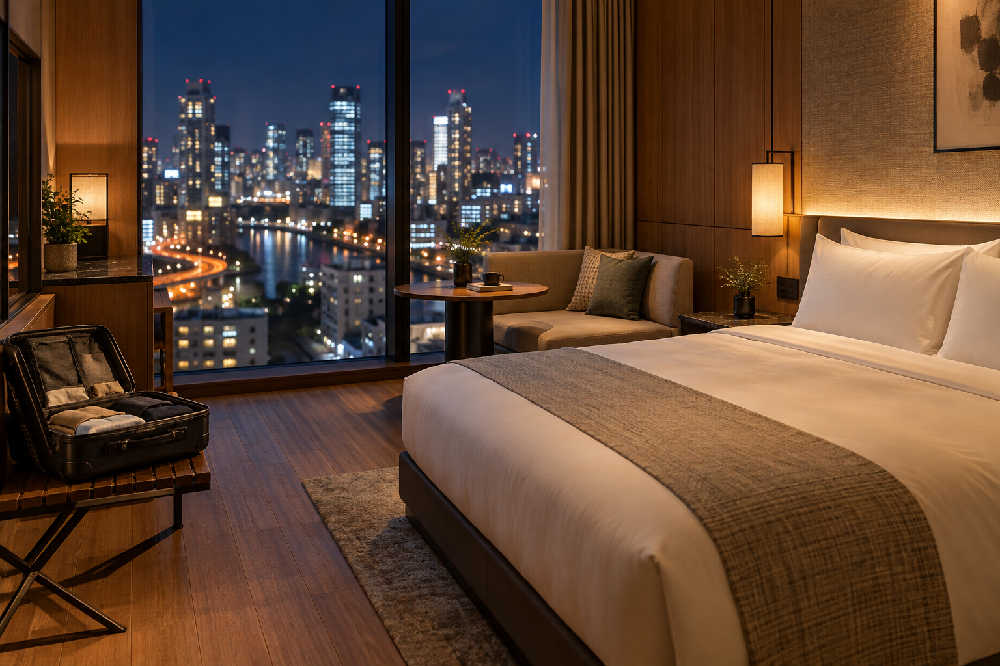
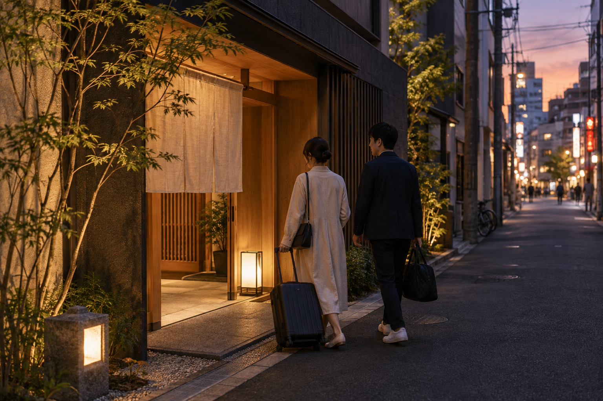
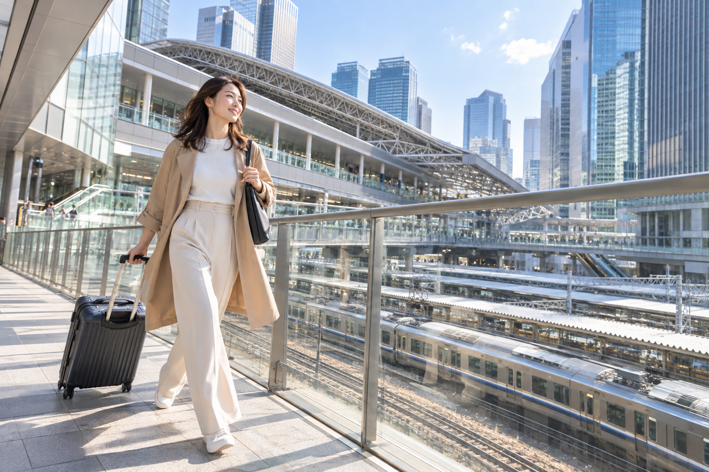

Where to Stay in Osaka: Best Areas for First-Time Visitors
Choosing where to stay in Osaka can change the entire feel of your trip. A hotel near Namba puts food, Dotonbori, and nightlife close to your door. Umeda makes regional trains and wider Kansai travel easier. Shinsaibashi gives you excellent shopping and walkable access to Minami, while Tennoji can offer a useful mix of transport, southern Osaka sightseeing, and better-value accommodation.
There is no single area that is best for every first-time visitor. The right choice depends on how long you are staying, whether Osaka is part of a larger Tokyo–Kyoto–Osaka trip, how important nightlife is, whether you are flying through Kansai International Airport, and how much luggage you are carrying.
This guide compares Osaka's main accommodation areas by transport, airport access, food, nightlife, sightseeing convenience, families, value, and regional travel. Choose the area first, then compare individual hotels inside it.
Best Areas to Stay in Osaka at a Glance

| Area | Best For | Main Advantage | Main Trade-Off |
|---|---|---|---|
| Namba | First visits, food, nightlife | Dotonbori and Minami on your doorstep | Busy and lively |
| Umeda | Transport, day trips, modern Osaka | Excellent regional rail connections | Less classic Osaka nightlife than Namba |
| Shinsaibashi | Shopping, couples, central Minami | Walkab le to Dotonbori and Amerikamura | Can be busy and commercial |
| Tennoji / Abeno | Value, families, southern Osaka | Good transport and useful KIX access | Farther from Umeda |
| Shin-Osaka | Early/late Shinkansen | Maximum bullet-train convenience | Weak evening atmosphere for most tourists |
| Hommachi | Quiet central base, value | Between Umeda and Namba | Less immediate nightlife |
| Bay Area | USJ, aquarium, families | Close to major family attractions | Poor default base for city sightseeing |
For a normal first visit, I would begin by comparing:
Namba
Umeda
Shinsaibashi
and:
Tennoji
The other areas become stronger when you have a specific reason to stay there.
What Matters Most When Choosing an Osaka Hotel Area?
Do not choose only by looking for the neighborhood with the most attractions.
Osaka has an excellent rail and subway network.
The better question is:
Which area makes my mornings, evenings, luggage, and onward travel easiest?
1. Distance from a Useful Station
A hotel that is:
3–7 minutes from a useful station
can be better than a more impressive property requiring a 15-minute walk twice every day.
This matters even more when:
- ✓You have large luggage
- ✓Summer is hot
- ✓Rain is heavy
- ✓You return late at night
- ✓You are traveling with children
Osaka sightseeing already includes plenty of walking.
You do not need to add a long hotel commute.
2. Which Station?
Do not stop at:
“The hotel is near a station.”
Osaka uses:
- ✓JR
- ✓Osaka Metro
- ✓Nankai
- ✓Hankyu
- ✓Hanshin
- ✓Kintetsu
- ✓Keihan
A hotel beside one station may be excellent for your itinerary while another similarly priced hotel beside a different line creates extra transfers.
Check the exact station before booking.
3. Your Evening Priorities
This is one of the biggest differences between Osaka accommodation areas.
Ask what you want after 7 PM.
Do you want to step outside and find:
- ✓Restaurants
- ✓Bars
- ✓Shopping
- ✓Dotonbori
- ✓Quiet streets
- ✓Department stores
If food and nightlife are central to the trip, Namba or Shinsaibashi becomes much more attractive.
If you prefer returning to a calmer transport hub after sightseeing, Umeda may fit better.
4. Airport Access
If you fly through Kansai International Airport, your hotel location affects how simple your arrival and departure feel.
KIX currently identifies Nankai Railway as the most convenient rail option for Namba, while JR and airport-bus services are useful for the Osaka/Umeda side.
This does not mean airport access should decide the entire trip.
But with heavy luggage, it matters.
5. Your Wider Japan Route
Consider what comes before and after Osaka.
For example:
Kyoto → Osaka → KIX
creates different priorities from:
Tokyo → Osaka → Hiroshima
or:
Osaka → Kyoto → Tokyo
Umeda can be excellent for regional rail.
Namba can be particularly convenient when KIX is the next major transfer.
6. Length of Stay
For:
1–2 nights
prioritize convenience.
For:
3–4 nights
evening atmosphere matters more because you will experience your hotel neighborhood several times.
7. Luggage
Do not underestimate this.
If you have:
- ✓Two large suitcases
- ✓Children
- ✓Stroller
- ✓Multiple city changes
a direct or simple station connection can be worth paying more for.
Namba: Best Overall for Food, Nightlife and a First Osaka Experience

For many first-time visitors, Namba is the easiest recommendation.
It puts you close to the Osaka people often imagine before arriving:
- ✓Dotonbori
- ✓Food
- ✓Neon
- ✓Shopping
- ✓Entertainment
- ✓Late evenings
Namba is also a major transport area rather than simply a nightlife neighborhood.
That combination makes it powerful.
Osaka's official tourism material describes Namba as a long-established center of entertainment, gourmet food, and popular culture.
Who Should Stay in Namba?
Namba is especially good for:
- ✓First-time visitors
- ✓Food-focused travelers
- ✓Couples
- ✓Solo travelers
- ✓Nightlife
- ✓Short stays
- ✓Visitors flying through KIX
- ✓Travelers who want Dotonbori within walking distance
Main Advantage: Your Evenings Are Easy
This is Namba's biggest strength.
After sightseeing at:
- ✓Osaka Castle
- ✓Umeda
- ✓Tennoji
you can return to your hotel and still have immediate access to:
- ✓Restaurants
- ✓Dotonbori
- ✓Bars
- ✓Shopping
- ✓Street atmosphere
You do not need to plan another evening commute.
Dotonbori Access
Depending on your exact hotel, you may be able to walk to Dotonbori in minutes.
That is especially useful because Dotonbori is strongest after dark.
If your hotel is in Namba, you can visit casually without worrying about the last part of the journey back.
Airport Access Is a Major Strength
Nankai Railway directly connects Kansai Airport with Nankai Namba Station.
KIX currently identifies Nankai as its most convenient option for Namba.
This can make arrival and departure particularly simple.
If you have:
- ✓Large luggage
- ✓Late arrival
- ✓Morning flight
that simplicity is valuable.
Namba Is Not One Station
This is important.
You may see:
- ✓Nankai Namba
- ✓Osaka Metro Namba
- ✓JR Namba
- ✓Osaka-Namba
They are related geographically but not identical platforms inside one small building.
Before booking a hotel advertised as:
“Near Namba Station”
check which Namba station the listing means.
A 3-minute walk from one operator may be much farther from the train you actually plan to use.
Namba for a 2-Day Osaka Trip
Excellent.
Your Osaka 2-Day Itinerary includes a major Minami evening, so staying nearby reduces late-day transport.
For a short stay, that can outweigh having slightly easier access to northern Osaka.
Namba for a 3-Day Osaka Trip
Also excellent.
Across three nights, you get repeated access to:
- ✓Restaurants
- ✓Shopping
- ✓Evening streets
without needing to schedule them formally.
Food Around Namba
Namba is one of the strongest Osaka bases if eating well matters.
You have access toward:
- ✓Dotonbori
- ✓Kuromon
- ✓Nipponbashi
- ✓Shinsaibashi
- ✓Namba side streets
This gives you far more than one famous restaurant street.
Namba for Couples
Very strong.
You get:
- ✓Night walks
- ✓Dinner choices
- ✓Dotonbori
- ✓Shopping
- ✓Easy late evenings
Couples wanting a lively Osaka experience may prefer Namba over Umeda.
Namba for Families
Good, but choose the exact block carefully.
A hotel directly beside the busiest entertainment streets may not be ideal if:
- ✓Children sleep early
- ✓Street noise matters
Look for a hotel close to Namba transport but slightly away from the loudest nightlife lanes.
Main Disadvantage: It Is Busy
Namba is not where I would stay if your priority is:
- ✓Quiet residential atmosphere
- ✓Calm evenings
- ✓Minimal crowds
The district can remain active late.
Exact hotel soundproofing matters.
Namba vs Umeda
Choose Namba for:
food + nightlife + classic first-time Osaka atmosphere
Choose Umeda for:
transport + regional travel + modern city convenience
For many tourists staying only in Osaka, I would lean toward:
Namba
For travelers using Osaka heavily as a Kansai transport base, Umeda becomes more competitive.
Umeda: Best for Transport, Day Trips and Modern Osaka

Umeda, around JR Osaka Station, is the strongest transport-focused accommodation area for many visitors.
The district combines:
- ✓JR Osaka Station
- ✓Osaka Metro
- ✓Hankyu
- ✓Hanshin
- ✓Large department stores
- ✓Restaurants
- ✓Hotels
- ✓Major shopping complexes
The official Osaka tourism guide describes Umeda as one of the city's major downtown areas, while Osaka Station functions as a major gateway for Osaka and surrounding Kansai destinations.
Who Should Stay in Umeda?
Umeda is particularly strong for:
- ✓First-time visitors
- ✓Regional day trips
- ✓Kyoto connections
- ✓Kobe connections
- ✓Families
- ✓Shopping
- ✓Modern hotels
- ✓Travelers prioritizing transport
- ✓Longer Kansai stays
Main Advantage: Regional Transport
If you want to use Osaka as a base for:
- ✓Kyoto
- ✓Kobe
- ✓Other regional destinations
Umeda provides excellent options.
You have access to multiple railway companies without needing to travel across Osaka before starting the regional trip.
Umeda Is Also Good for City Sightseeing
Do not assume it is only a transport hub.
The area itself includes:
- ✓Shopping centers
- ✓Department stores
- ✓Restaurants
- ✓Umeda Sky Building
- ✓Modern architecture
You can easily spend an evening here.
Excellent Shopping
If shopping matters, Umeda is one of Osaka's strongest bases.
You have enormous commercial complexes around the station.
This is especially useful during:
- ✓Rain
- ✓Summer heat
- ✓Winter cold
You can spend substantial time indoors without leaving the district.
Food Is Better Than Some Visitors Expect
Umeda has extensive dining.
You do not need to travel to Dotonbori every night for a good meal.
Options include:
- ✓Department-store restaurants
- ✓Underground dining areas
- ✓Izakaya
- ✓Cafes
- ✓Casual Japanese meals
- ✓Higher-end restaurants
Umeda for Families
Very good.
Families may appreciate:
- ✓Major stations
- ✓Elevators
- ✓Modern hotels
- ✓Department stores
- ✓Restaurants
- ✓Indoor spaces
The district can still be crowded, particularly around commuting periods, but its infrastructure is strong.
Umeda for Bad Weather
This is probably the strongest accommodation area for travelers who value weather resilience.
Many parts of the district connect through:
- ✓Stations
- ✓Underground passages
- ✓Shopping buildings
You can reduce exposure to heavy rain or heat.
Main Disadvantage: Station Complexity
Umeda can initially feel confusing.
The wider station area includes:
- ✓JR Osaka Station
- ✓Umeda subway stations
- ✓Hankyu Osaka-Umeda
- ✓Hanshin Osaka-Umeda
- ✓Underground malls
A hotel marketed as:
“5 minutes from Umeda”
may be five minutes from one part of this huge complex and longer from another.
Check the exact walking route.
Main Disadvantage: Less Immediate Dotonbori Atmosphere
You can reach Namba easily using the Midosuji Line.
But you cannot simply walk out of your hotel and be in Dotonbori.
If your ideal Osaka evening is:
hotel → street food → neon → bars
Namba may suit you better.
Umeda and KIX
For Osaka/Umeda, KIX currently recommends JR as a convenient railway choice and also notes airport shuttle-bus options.
That is still good airport access.
Namba simply has the advantage of the straightforward Nankai connection.
Umeda vs Namba for a First Visit
This is the most important Osaka accommodation choice.
Choose Umeda If:
- ✓Regional transport matters
- ✓You plan day trips
- ✓Modern shopping matters
- ✓You prefer a major transport hub
- ✓You want easy access toward northern Osaka
Choose Namba If:
- ✓Food matters most
- ✓Dotonbori matters
- ✓Nightlife matters
- ✓KIX convenience matters
- ✓You want a livelier evening base
Neither is wrong.
The difference is what you want outside your hotel at night.
Shinsaibashi: Best for Shopping, Couples and Walkable Minami
Shinsaibashi is close enough to Namba that the two areas often appear together in travel planning.
But they do not feel exactly the same.
Shinsaibashi is particularly strong for:
- ✓Shopping
- ✓Fashion
- ✓Restaurants
- ✓Cafes
- ✓Amerikamura
- ✓Dotonbori access
It can be a superb choice for travelers who want Minami without staying directly beside Namba's largest station complex.
Osaka's official accommodation directory groups Shinsaibashi and Namba together as the Minami accommodation zone, reflecting how naturally the two areas function together for visitors.
Who Should Stay in Shinsaibashi?
Shinsaibashi works especially well for:
- ✓Couples
- ✓Shopping-focused travelers
- ✓Fashion
- ✓Food
- ✓Nightlife
- ✓First-time visitors
- ✓Travelers who like walking
Main Advantage: Walkability
From a well-located Shinsaibashi hotel, you may be able to walk to:
- ✓Dotonbori
- ✓Amerikamura
- ✓Namba
- ✓Shopping streets
- ✓Restaurants
This can make evenings exceptionally easy.
Strong Metro Access
Shinsaibashi sits on the Midosuji Line.
That is valuable because the same major subway corridor connects toward:
- ✓Namba
- ✓Umeda
- ✓Shin-Osaka
This makes Shinsaibashi more practical than its shopping reputation alone suggests.
Shinsaibashi for Couples
One of my strongest choices.
You get:
- ✓Restaurants
- ✓Cafes
- ✓Shopping
- ✓Dotonbori evening access
- ✓Amerikamura
- ✓More walkable nights
without needing to stay directly on Dotonbori's busiest blocks.
Shinsaibashi vs Namba
This is a subtle choice.
Choose Namba If:
- ✓Airport access matters more
- ✓Nankai Railway matters
- ✓You want the biggest transport hub
- ✓Dotonbori/Namba food is your focus
Choose Shinsaibashi If:
- ✓Shopping matters more
- ✓You want a slightly more north-Minami position
- ✓You like walking toward Dotonbori
- ✓Fashion and cafes matter
For many visitors, hotel quality and exact station distance should decide between them.
Tennoji and Abeno: Best for Value, Families and Southern Osaka Connections
Tennoji/Abeno is often overlooked by first-time visitors searching only for Namba or Umeda.
That can be a mistake.
Tennoji is a major transport area with access to:
- ✓Osaka Metro
- ✓JR
- ✓Regional rail
- ✓Abeno
- ✓Shinsekai
- ✓Southern Osaka
The official Osaka tourism guide identifies Tennoji as one of the city's major urban centers, combining transport, dining, nightlife, parks, and high-rise development.
Who Should Stay in Tennoji?
Tennoji is worth comparing if you want:
- ✓Good transport
- ✓Family convenience
- ✓Potential value
- ✓Shinsekai access
- ✓Southern Osaka
- ✓KIX-friendly rail
- ✓Modern shopping centers
Strong Airport Logic
JR airport services use the Tennoji corridor, making this area useful for KIX access.
KIX's current access guidance specifically identifies Tennoji as a transfer point on its JR airport route toward Shin-Osaka.
That can make Tennoji a practical compromise between:
- ✓Airport convenience
- ✓Osaka sightseeing
Strong Southern Osaka Access
Our 3-day Osaka route includes:
- ✓Sumiyoshi Taisha
- ✓Shitennoji
- ✓Tennoji
- ✓Shinsekai
Staying in Tennoji gives you excellent access to this side of the city.
Family-Friendly Infrastructure
The broader area includes:
- ✓Shopping centers
- ✓Restaurants
- ✓Tennoji Park
- ✓Modern hotels
- ✓Major stations
This can make it easier for families than a hotel buried inside a narrow nightlife street.
Potential Value
Hotel rates change constantly, so no neighborhood is permanently cheap.
But Tennoji can be worth comparing when similar Namba or Umeda properties are expensive.
Do not assume moving slightly away from the two most famous hotel districts means sacrificing good transport.
Main Disadvantage: Less Convenient for Umeda
Tennoji sits farther south.
Travel to:
- ✓Umeda
- ✓Northern Osaka
takes more time than from Namba or central Osaka.
For a trip heavily focused on regional rail from Osaka Station, Umeda will usually be stronger.
Main Disadvantage: Different Evening Experience
You have access to:
- ✓Abeno
- ✓Shinsekai
- ✓Restaurants
but the evening feel is different from Dotonbori.
If Dotonbori nightlife is your biggest Osaka priority, Namba or Shinsaibashi is easier.
Namba vs Umeda vs Shinsaibashi vs Tennoji
If you want a quick decision, use this:
Choose Namba for:
Classic first-time Osaka
Best if you want:
- ✓Food
- ✓Dotonbori
- ✓Nightlife
- ✓KIX access
Choose Umeda for:
Transport
Best if you want:
- ✓Regional day trips
- ✓Modern shopping
- ✓JR access
- ✓Umeda convenience
Choose Shinsaibashi for:
Shopping + walkable evenings
Best if you want:
- ✓Fashion
- ✓Dotonbori walks
- ✓Couples trip
- ✓Central Minami
Choose Tennoji for:
Value + southern access
Best if you want:
- ✓Good transport
- ✓Family convenience
- ✓KIX access
- ✓Shinsekai/Tennoji proximity
For the average first-time visitor who wants the most recognizable Osaka experience, I would start with:
Namba or Shinsaibashi.
For the traveler using Osaka as a wider Kansai transport base, I would start with:
Umeda.
Hommachi: Best for a Quiet Central Base and Good Value
Hommachi is one of Osaka's most useful accommodation areas for travelers who want to stay centrally without sleeping inside the busiest parts of Namba or Umeda.
It sits between those two major hubs.
That gives Hommachi an important advantage:
you are not far from either side of central Osaka.
The neighborhood is more business-oriented than tourist-heavy.
For some travelers, that is exactly what makes it attractive.
Who Should Stay in Hommachi?
Hommachi works especially well for:
- ✓First-time visitors who prefer quieter evenings
- ✓Couples who do not need nightlife outside the hotel
- ✓Business-hotel travelers
- ✓Budget-conscious travelers
- ✓Longer stays
- ✓Visitors using Osaka Metro heavily
- ✓Travelers who want a central position
Osaka's official hotel directory treats Nakanoshima, Yodoyabashi, and Hommachi as a distinct accommodation zone, with a mix of business, city, and luxury hotels.
Transport Is Hommachi's Biggest Strength
Hommachi Station is served by useful Osaka Metro lines, including the Midosuji Line.
The Midosuji Line is particularly valuable because it runs through major visitor areas such as:
- ✓Umeda
- ✓Shinsaibashi
- ✓Namba
- ✓Tennoji
- ✓Shin-Osaka
This means you can stay somewhere calmer without making the main sightseeing districts difficult to reach.
Hommachi vs Namba
Choose Hommachi if:
- ✓You want quieter evenings
- ✓Hotel value is better
- ✓Nightlife is not a major priority
- ✓You prefer a business-district atmosphere
Choose Namba if:
- ✓Dotonbori matters
- ✓Food and nightlife matter
- ✓You want to walk out into the busiest part of Minami
Hommachi vs Umeda
Choose Hommachi if:
- ✓You want to sit between north and south Osaka
- ✓You prefer a smaller-scale neighborhood
- ✓You use the Metro more than regional rail
Choose Umeda if:
- ✓Day trips matter
- ✓JR access matters
- ✓You want major shopping centers
- ✓Regional rail is central to your trip
Evening Atmosphere
Hommachi is less exciting after dark than:
- ✓Namba
- ✓Shinsaibashi
- ✓Umeda
That is both the advantage and disadvantage.
You may have restaurants and cafes nearby, but the neighborhood is not where most first-time visitors go specifically for nightlife.
If you spend every evening in Dotonbori, staying in Namba will probably feel easier.
If you prefer returning somewhere calmer after dinner, Hommachi can be excellent.
Hommachi for Families
It can work very well.
Look for:
- ✓Larger room
- ✓Short station walk
- ✓Laundry
- ✓Convenience store
- ✓Easy breakfast
The calmer evening atmosphere can also help families with younger children.
Hommachi for a 3–4 Night Stay
This is where the area becomes especially attractive.
You get a practical central base without paying specifically for:
- ✓Dotonbori
- ✓Umeda Station
outside your door.
If the room is better and the station is close, Hommachi can provide better overall value than a famous neighborhood name.
Shin-Osaka: Best for Shinkansen Logistics
Shin-Osaka is the correct place to consider when bullet-train convenience is your main concern.
The Tokaido and Sanyo Shinkansen use Shin-Osaka rather than Osaka Station.
That makes the area useful for travelers who have:
- ✓Very early Shinkansen
- ✓Late Shinkansen arrival
- ✓Multiple long-distance train journeys
- ✓One-night Osaka stop
- ✓Tight business-style itinerary
But it is generally not my first recommendation for a normal Osaka sightseeing trip.
Why Stay Near Shin-Osaka?
The obvious advantage is:
you are already beside the bullet train.
That can simplify routes such as:
- ✓Tokyo → Osaka
- ✓Osaka → Hiroshima
- ✓Osaka → Tokyo
You remove the extra step of traveling between your hotel and Shin-Osaka.
KIX and Shin-Osaka
Kansai Airport's current guidance explains that Shin-Osaka can be reached from KIX through either:
- ✓JR via Tennoji and onward connection
- ✓Nankai to Namba and then the Midosuji Line
- ✓Airport bus to Umeda followed by Metro
That makes Shin-Osaka accessible, but not as direct from KIX as Namba.
Main Disadvantage: Weak Evening Experience
This is the biggest reason I do not rank it highly for ordinary first-time sightseeing.
After a day exploring Osaka, most travelers would rather return to:
- ✓Namba
- ✓Shinsaibashi
- ✓Umeda
- ✓Tennoji
than spend the evening around a transport-focused district.
You can still find:
- ✓Hotels
- ✓Restaurants
- ✓Convenience stores
near Shin-Osaka.
But the neighborhood itself is not one of Osaka's main visitor experiences.
Shin-Osaka vs Umeda
If you want:
bullet-train convenience above everything
choose Shin-Osaka.
If you want:
excellent transport plus a proper city neighborhood
choose Umeda.
For most first-time visitors, Umeda gives a stronger balance.
When I Would Choose Shin-Osaka
I would seriously consider it if:
- ✓You arrive after 10 PM
- ✓You leave very early
- ✓Osaka is only a one-night stop
- ✓You make several Shinkansen trips
- ✓You find an unusually strong hotel deal
When I Would Not Choose It
I would avoid it as the default for:
- ✓3-night first visit
- ✓Food-focused Osaka trip
- ✓Dotonbori nightlife
- ✓Couple's leisure trip
- ✓Shopping-focused stay
The time saved at the Shinkansen station may be smaller than the time you spend commuting to the places you actually want to experience.
Bay Area and Universal City: Best for USJ-Focused Trips
Osaka's Bay Area serves a different type of visitor.
This is where major entertainment attractions include:
- ✓Universal Studios Japan
- ✓Osaka Aquarium Kaiyukan
- ✓Waterfront attractions
If your Osaka trip is heavily centered around these places, staying nearby can make sense.
If you are mainly visiting:
- ✓Dotonbori
- ✓Umeda
- ✓Osaka Castle
- ✓Shinsekai
I would choose a more central base.
Universal City: Best for a Serious USJ Visit
Staying around Universal City can be valuable when Universal Studios Japan is one of the main reasons for your trip.
The biggest benefit is obvious:
you are close to the park entrance.
That matters if you want:
- ✓Early start
- ✓Full park day
- ✓Easy return after closing
- ✓Less morning transport
- ✓Family convenience
Who Should Stay Near USJ?
Consider Universal City if:
- ✓USJ is the main Osaka priority
- ✓You have children
- ✓You plan a long park day
- ✓You want the easiest possible morning
- ✓You stay only one or two nights centered on the park
Should You Stay There for the Entire Osaka Trip?
Usually not for a normal first-time city trip.
If you have:
3 Osaka nights
and only one is a USJ day, Namba, Umeda, or another central base may still be better overall.
You can commute to USJ once rather than commute from the Bay Area to central Osaka on multiple days.
When a Split Stay Can Make Sense
Unlike most city hotel changes, a split stay can occasionally make sense here.
For example:
2 central Osaka nights + 1 Universal City night
can be reasonable if:
- ✓USJ is a major family priority
- ✓You want an extremely early park start
- ✓Hotel change does not bother you
But for most travelers, I would still prefer one good central base.
Osaka Aquarium Area
The Bay Area also becomes relevant if Kaiyukan is a major priority.
The aquarium is in the Tempozan side of the Bay Area rather than at Universal City itself.
Do not assume one Bay Area hotel automatically puts both attractions beside the entrance.
The wider Bay Area covers several different waterfront locations.
Main Disadvantage: Poorer General City Base
The Bay Area is less convenient for repeated evenings around:
- ✓Namba
- ✓Shinsaibashi
- ✓Umeda
- ✓Shinsekai
That becomes noticeable across several nights.
Bay Area for Families
Strong when entertainment is the purpose.
Families may appreciate:
- ✓Shorter USJ morning
- ✓Easier return
- ✓Family-focused hotels
- ✓Major attractions nearby
But if the children are not visiting USJ, central Osaka generally offers more useful flexibility.
Shin-Imamiya: Best for Budget Travelers Who Prioritize Transport and Price
Shin-Imamiya is one of Osaka's most interesting budget accommodation alternatives.
It sits near:
- ✓Shinsekai
- ✓Tennoji
- ✓Southern Osaka
and has useful transport connections.
The area has long been associated with inexpensive accommodation, though the hotel market has been changing with newer and more upscale properties appearing alongside older budget options.
Osaka's official tourism site specifically notes Shin-Imamiya as an area where travelers looking to save money can find accommodation.
Who Should Consider Shin-Imamiya?
It can work well for:
- ✓Budget travelers
- ✓Solo travelers
- ✓Backpackers
- ✓Travelers prioritizing price
- ✓Shinsekai fans
- ✓Visitors comfortable with a more local, mixed urban environment
Transport Is Better Than the Price Might Suggest
Shin-Imamiya has access to useful rail connections.
That can make it practical for:
- ✓Namba
- ✓Tennoji
- ✓KIX
- ✓Other parts of Osaka
depending on the exact station and operator.
This is why it can provide more value than simply choosing a cheap hotel far outside central Osaka.
Access to Shinsekai
The area is particularly convenient for:
- ✓Tsutenkaku
- ✓Shinsekai
- ✓Southern Osaka
If those neighborhoods are among your main interests, Shin-Imamiya becomes more attractive.
Main Trade-Off: Neighborhood Feel
First-time visitors should understand that Shin-Imamiya has a different atmosphere from:
- ✓Umeda
- ✓Shinsaibashi
- ✓polished parts of Namba
The surrounding streets can feel more mixed, local, and less polished.
That does not make the area unusable.
It means you should choose it deliberately rather than booking only because the nightly rate is low.
Check the Exact Block
This matters a lot here.
Two hotels carrying the same general area name may feel quite different based on:
- ✓Station exit
- ✓Street
- ✓Immediate surroundings
Read recent reviews and inspect the map.
Shin-Imamiya vs Tennoji
Choose Shin-Imamiya if:
- ✓Price matters more
- ✓Shinsekai access matters
- ✓You are comfortable with the local environment
Choose Tennoji if:
- ✓Family convenience matters
- ✓Modern shopping matters
- ✓You prefer a more polished base
- ✓Hotel infrastructure matters more
Shin-Imamiya for Families
It would not be my first general family recommendation.
I would normally prefer:
- ✓Tennoji
- ✓Umeda
- ✓Namba
unless a specific Shin-Imamiya hotel provides exactly the room and services the family needs.
Best Osaka Area for First-Time Visitors Overall
For a typical first visit, my shortlist remains:
1. Namba
Best for:
- ✓Food
- ✓Dotonbori
- ✓Nightlife
- ✓KIX
2. Umeda
Best for:
- ✓Transport
- ✓Day trips
- ✓Shopping
- ✓Regional rail
3. Shinsaibashi
Best for:
- ✓Couples
- ✓Shopping
- ✓Walkable Minami
4. Tennoji
Best for:
- ✓Families
- ✓Value
- ✓Southern access
Hommachi becomes an excellent alternative if you value:
quiet + central location + potential value.
The other areas need a more specific reason.
Best Area for a 2-Day Osaka Trip
For a short stay, convenience matters more.
My strongest choices are:
Namba
Best if your trip emphasizes:
- ✓Food
- ✓Dotonbori
- ✓Minami
Umeda
Best if:
- ✓You arrive by regional rail
- ✓You have onward journeys
- ✓Modern Osaka appeals more
I would generally avoid staying farther out simply to save a small amount on a two-day trip.
Best Area for a 3-Day Osaka Trip
With three days, you experience your hotel neighborhood several times.
That strengthens:
Namba / Shinsaibashi
if evenings matter.
It also strengthens:
Hommachi
for travelers who want a calmer central hotel and do not need nightlife downstairs.
Best Osaka Area for Families
My starting order would be:
Umeda
Strong for:
- ✓Major transport
- ✓Restaurants
- ✓Indoor shopping
- ✓Modern hotels
Tennoji
Strong for:
- ✓Transport
- ✓Parks
- ✓Shopping
- ✓Southern Osaka
- ✓Possible value
Namba
Strong when:
- ✓Food
- ✓Dotonbori
- ✓Airport convenience
matter, but choose a hotel away from the loudest entertainment lanes.
Universal City
Move this to number one if:
USJ is the central purpose of the trip.
Best Area for Couples
My strongest choices are:
Shinsaibashi
Great balance of:
- ✓Restaurants
- ✓Shopping
- ✓Dotonbori walks
- ✓Cafes
Namba
Best for:
- ✓Active evenings
- ✓Food
- ✓Nightlife
Umeda
Best for:
- ✓Premium modern hotels
- ✓Skyline
- ✓Shopping
For a couple who wants the most energetic Osaka experience, I would lean toward Minami.
Best Area for Solo Travelers
Strong options include:
Namba
For:
- ✓Nightlife
- ✓Easy food
- ✓Social urban atmosphere
Umeda
For:
- ✓Transport
- ✓Regional trips
- ✓Business hotels
Hommachi
For:
- ✓Value
- ✓Quieter evenings
Shin-Imamiya
For:
- ✓Budget
Choose based on comfort level and budget rather than following a universal ranking.
Best Area for Budget Travelers
Start by comparing:
- ✓Hommachi
- ✓Tennoji
- ✓Shin-Imamiya
- ✓Business hotels around major stations
Do not automatically move far outside central Osaka to save money.
A cheap room can become poor value if you spend:
- ✓More on transport
- ✓More time commuting
- ✓More on taxis
Location is part of the price.
Best Area for Food
My first choice is:
Namba
followed closely by:
Shinsaibashi
You have easy access to:
- ✓Dotonbori
- ✓Namba restaurants
- ✓Kuromon
- ✓Side streets
- ✓Minami nightlife
Umeda is also excellent for dining, but the overall evening experience is different.
Best Area for Nightlife
Choose:
Namba
or:
Shinsaibashi
These areas make late evenings easier because you can walk back to the hotel instead of checking the final Metro service.
Best Area for Quiet Nights
Consider:
- ✓Hommachi
- ✓Selected Umeda side streets
- ✓Parts of Tennoji
But noise depends more on the exact hotel than the district name.
Check recent reviews for:
- ✓Street noise
- ✓Bars
- ✓Rail lines
- ✓Soundproofing
Best Area for Shopping
Choose between:
Umeda
Best for:
- ✓Department stores
- ✓Major commercial complexes
- ✓Indoor shopping
Shinsaibashi
Best for:
- ✓Fashion
- ✓Street shopping
- ✓Dotonbori access
- ✓Amerikamura
Your preferred shopping style should decide.
Best Area for Universal Studios Japan
If USJ dominates the trip:
Universal City
If USJ is only one day inside a larger Osaka visit:
Umeda or another central base
can be more practical overall.
Do not choose a Bay Area hotel for three nights just to save one morning commute unless the park experience is the main priority.
Best Area for Kansai International Airport
Namba
Strongest for the direct Nankai connection.
Tennoji
Useful because JR airport services run through the area.
Umeda
Good JR and airport-bus options.
The best one depends on your actual hotel.
Do not choose an accommodation area only because one train goes to KIX, but use airport convenience as a tie-breaker between otherwise similar options.
Best Area for Shinkansen Travel
For pure convenience:
Shin-Osaka
But ask how many times you actually use the bullet train.
For one arrival and one departure, I would usually rather stay somewhere more enjoyable and make the extra transfer.
For multiple Shinkansen journeys or an early departure, Shin-Osaka becomes much more logical.
Best Area for Kyoto Day Trips
I would favor:
Umeda
because it provides several useful regional railway options.
The exact best route depends on where in Kyoto you are going.
If you plan two or three full Kyoto sightseeing days, however, staying in Kyoto is usually better than commuting repeatedly.
Best Area for Kobe Day Trips
Again:
Umeda
is particularly strong because of convenient regional railway connections.
This is one reason Umeda works so well for travelers using Osaka as a broader Kansai base.
Best Area for Nara Day Trips
Namba and Tennoji can both be very practical depending on whether your preferred route uses Kintetsu or JR.
If Nara is an important part of the trip, compare the exact railway route from your shortlisted hotels before booking.
Best Area if You Arrive From Tokyo
You will arrive at Shin-Osaka by Shinkansen.
That does not mean you need to sleep there.
For most visitors:
Transfer to Umeda
if transport and regional travel matter.
Transfer to Namba/Shinsaibashi
if nightlife and food matter.
Stay at Shin-Osaka only when the Shinkansen convenience itself is more important than hotel-area atmosphere.
Best Area if You Come From Kyoto
Several Osaka areas can work because Kyoto and Osaka have multiple railway connections.
Umeda is particularly useful for several regional routes.
But Namba may still be the better hotel choice if you want:
- ✓Dotonbori
- ✓Food
- ✓KIX departure
after your Osaka stay.
Think about both:
where you are coming from
and:
where you are going next.
Best Area if You Fly Home From KIX
This strengthens:
Namba
especially if you want the straightforward Nankai connection.
Tennoji and Umeda remain viable.
I would use airport access as one factor, not the only factor.
Best Area if Osaka Is Your Final Japan City
If Osaka is the final major stop and you fly home afterward, Namba becomes especially attractive.
You get:
- ✓Strong evenings
- ✓Food
- ✓Shopping
- ✓Straightforward KIX connection
That can create a convenient finish to a Japan trip.
Best Area if Osaka Is Mostly a Day-Trip Base
If your Osaka nights support:
- ✓Kyoto
- ✓Kobe
- ✓Regional rail
more than Osaka nightlife, I would lean toward:
Umeda
The neighborhood is better suited to repeated regional departures.
Should You Change Hotels Inside Osaka?
For most 2–4 night first visits:
No.
One good hotel is enough.
Changing hotels adds:
- ✓Packing
- ✓Check-out
- ✓Luggage
- ✓Check-in
- ✓Lost time
Osaka's transport network makes a split stay unnecessary for normal sightseeing.
The Main Exception
A USJ-focused family trip can justify:
central Osaka + one Universal City night
if the park experience is important enough.
Even then, it is optional.
My Osaka Accommodation Decision Rule
Use this simple framework:
Choose Namba
if food and nightlife come first.
Choose Umeda
if transport and day trips come first.
Choose Shinsaibashi
if shopping and walkable Minami evenings come first.
Choose Tennoji
if value, families, and southern access come first.
Choose Hommachi
if central convenience with calmer nights comes first.
Choose Shin-Osaka
if Shinkansen logistics dominate the trip.
Choose Universal City
if USJ is the main purpose.
Choose Shin-Imamiya
if budget is the priority and the area suits your comfort level.
That turns a long list of Osaka neighborhoods into a much easier hotel decision.
How to Choose the Actual Hotel in Osaka
Once you have chosen the right Osaka area, the next step is selecting the actual hotel.
This matters because two hotels advertised as being in:
Namba
or:
Umeda
can produce very different experiences.
Before booking, check:
- ✓Exact station
- ✓Walking distance
- ✓Railway line
- ✓Room size
- ✓Luggage storage
- ✓Laundry
- ✓Noise
- ✓Family-room setup
- ✓Accessibility
- ✓Airport route
For a first Osaka trip, a practical hotel in a slightly less famous street often works better than a beautiful property with poor transport access.
How Close Should Your Osaka Hotel Be to a Station?
For most first-time visitors, I would aim for roughly:
5–10 minutes on foot
from a useful station.
Closer is particularly valuable if:
- ✓You have large luggage
- ✓You visit during summer
- ✓Rain is likely
- ✓You have young children
- ✓You expect late evenings
- ✓Someone has limited mobility
A 15-minute walk may sound fine while booking.
After a full day in:
- ✓Osaka Castle
- ✓Shinsekai
- ✓Shinsaibashi
- ✓Dotonbori
that same walk can feel much longer.
Check the Exact Station, Not Just the Neighborhood
This is especially important in Osaka.
A listing may say:
“5 minutes from Namba”
but Namba includes several railway and subway stations.
Likewise, Umeda contains multiple operators and station entrances.
Before booking, identify:
- ✓The nearest station
- ✓The railway or subway operator
- ✓The station exit
- ✓The real walking route to the hotel
A convenient station name on a booking website is not enough.
Check the Real Walking Route
Map distance can be misleading.
A short route may include:
- ✓Large intersections
- ✓Underground passages
- ✓Stairs
- ✓Overpasses
- ✓Complicated station exits
This matters especially with luggage.
A hotel 500 meters away using a simple flat route can be easier than one 300 meters away through a confusing station complex.
Room Size Matters in Osaka
Japanese hotel rooms can be compact.
Always check the room size in:
square meters
rather than judging it from photographs.
Wide-angle hotel photos can make a small room appear much larger.
For One Traveler
A compact business-hotel room may be perfectly comfortable.
For a Couple
Check whether you can:
- ✓Open both suitcases
- ✓Walk around the bed
- ✓Store luggage without blocking the entrance
For Families
Room layout becomes even more important.
Check:
- ✓Number of actual beds
- ✓Sofa-bed arrangement
- ✓Connecting rooms
- ✓Maximum occupancy
- ✓Bathroom setup
Do not assume the word:
“family room”
means a large Western-style hotel room.
Bed Size Matters Too
Read the exact bed dimensions.
Terms such as:
- ✓Double
- ✓Semi-double
- ✓Twin
may not match what you expect from hotels in your home country.
A semi-double room may work for two travelers trying to save money, but it may feel cramped on a longer stay.
Business Hotels Can Offer Excellent Value
Do not ignore Japanese business hotels.
They can be especially useful around:
- ✓Umeda
- ✓Hommachi
- ✓Shin-Osaka
- ✓Tennoji
Typical strengths include:
- ✓Good station access
- ✓Clean rooms
- ✓Private bathrooms
- ✓Laundry facilities
- ✓Reliable check-in
- ✓Competitive rates
The main trade-off is usually:
room size
rather than poor location or poor service.
For travelers who spend most of the day exploring Osaka, this can be a very good compromise.
Hotel vs Apartment in Osaka
Both can work.
Choose a Hotel If You Want:
- ✓Front desk
- ✓Luggage storage
- ✓Easier check-in
- ✓Staff assistance
- ✓Daily services
- ✓Luggage-delivery support
Choose an Apartment-Style Stay If You Want:
- ✓More living space
- ✓Kitchen
- ✓Washing machine
- ✓Longer stay
- ✓Family or group accommodation
Neither format is automatically better.
Apartments Can Have Hidden Trade-Offs
Before booking an apartment-style property, check:
- ✓Is there a staffed front desk?
- ✓Can you store luggage before check-in?
- ✓Can you leave luggage after check-out?
- ✓Is there an elevator?
- ✓How does self-check-in work?
- ✓Is late arrival possible?
A large apartment can be excellent once you are inside.
It can be less convenient on travel days.
Best Choice for Families
For families, I would prioritize:
- ✓Room size
- ✓Station distance
- ✓Laundry
- ✓Luggage storage
- ✓Elevator
- ✓Easy food nearby
before worrying about having the most prestigious address.
A slightly larger room near Tennoji or Umeda may provide a better family stay than a tiny room beside Dotonbori.
Check Hotel Luggage Storage Before Booking
This is one of the most useful hotel services in Osaka.
Confirm whether the property accepts luggage:
- ✓Before check-in
- ✓After check-out
This allows you to turn arrival and departure days into usable sightseeing time.
Example
Your train arrives at:
10:00 AM
Hotel check-in begins at:
3:00 PM
If the hotel stores bags, you can:
drop luggage → start sightseeing → return later
instead of carrying a suitcase around Osaka.
Osaka Has Additional Luggage Storage Options
If your hotel cannot keep your bags, major Osaka transport hubs have:
- ✓Coin lockers
- ✓Staffed baggage counters
- ✓Delivery services
Current Osaka tourism resources specifically list storage around:
- ✓Osaka/Umeda Station
- ✓Shin-Osaka
- ✓Namba
- ✓KIX
- ✓Itami
So hotel storage is valuable, but it is not your only option.
Luggage Forwarding Can Be Useful on Multi-City Trips
If Osaka sits inside a longer Japan itinerary, luggage forwarding may be worth using.
For example:
Kyoto → Osaka → Hiroshima
or:
Osaka → Tokyo
You may be able to send your main suitcase onward while traveling with a smaller bag.
For the complete process, use Luggage Forwarding in Japan: How Takkyubin Works.
Check Whether the Hotel Can Receive Forwarded Bags
Do not assume every property handles luggage in the same way.
Before sending anything, confirm:
- ✓Hotel name
- ✓Reservation name
- ✓Check-in date
- ✓Whether unattended accommodation accepts deliveries
Traditional hotels with a staffed reception usually make this easier than some apartment-style properties.
Laundry Is Useful on Longer Japan Trips
If Osaka comes near the middle of a 10- or 14-day Japan trip, laundry can become one of the most valuable hotel features.
Check for:
- ✓Coin laundry
- ✓Washer/dryer
- ✓In-room washing machine
- ✓Hotel laundry service
A laundry evening can reduce how much clothing you need to carry through Japan.
Should You Book Hotel Breakfast?
It depends on your travel style.
Hotel breakfast is useful for:
- ✓Families
- ✓Travelers who like easy mornings
- ✓People with dietary requirements
- ✓Travelers who prefer a proper breakfast
But Osaka has plenty of:
- ✓Convenience stores
- ✓Cafes
- ✓Bakeries
and some sightseeing days may begin early.
Do not pay substantially more for breakfast if you expect to skip it.
Dinner Options Near the Hotel Matter More Than Many Travelers Expect
Think about what happens after:
9 PM
If you stay near Namba or Shinsaibashi, food choices remain extensive.
Umeda also has a huge dining scene.
In quieter areas, check whether you have:
- ✓Restaurants
- ✓Convenience store
- ✓Late food
within a comfortable walk.
After a long sightseeing day, another 20-minute train ride for dinner can become frustrating.
Check Recent Noise Reviews
Do not make assumptions such as:
Namba is always noisy
or:
Hommachi is always quiet.
The actual building matters.
Check recent reviews for comments about:
- ✓Street noise
- ✓Bars
- ✓Train tracks
- ✓Sirens
- ✓Thin walls
- ✓Elevator noise
- ✓Construction
A well-insulated Namba hotel can be quieter than a poorly designed hotel on a major road elsewhere.
Light Sleepers Should Check the Room Position
When possible, request:
- ✓Higher floor
- ✓Room away from main road
- ✓Room away from elevator
- ✓Non-smoking room
This can matter more than choosing an entirely different neighborhood.
Accessibility: Check the Hotel and the Station
Travelers with limited mobility should not choose only by area.
Check the complete chain:
station → station exit → street → hotel entrance → room
Questions to ask include:
- ✓Is there an elevator?
- ✓Is the station exit step-free?
- ✓Is the hotel entrance level?
- ✓Is there an accessible bathroom?
- ✓Can a taxi stop directly outside?
- ✓Is there enough space around the bed?
Osaka's official tourism organization maintains current barrier-free resources covering transport, hotels, attractions, restrooms, and wheelchair planning.
Best Areas for Easier Accessibility
At a broad level, I would compare:
Umeda
Good modern infrastructure and extensive transport.
Tennoji
Major station, modern commercial buildings, and multiple hotel choices.
Namba
Very useful transport, but check the exact station exit because the wider Namba complex is large.
The actual hotel remains more important than the neighborhood ranking.
Staying Near Dotonbori With Limited Mobility
Dotonbori can become extremely crowded.
If nightlife matters, consider staying near Namba but not directly on the busiest pedestrian street.
That can provide:
- ✓Short evening distance
- ✓Easier taxi access
- ✓Less congestion immediately outside the hotel
Best Osaka Area With Large Luggage
My first comparisons would be:
Namba
Especially strong if you arrive or depart through KIX using Nankai.
Umeda
Strong for major rail connections and regional travel.
Shin-Osaka
Best only when Shinkansen convenience dominates your trip.
Avoid choosing a difficult hotel simply because it is inside an exciting neighborhood.
Best Area for a Late KIX Arrival
A direct or simple airport route becomes particularly valuable after a long flight.
Namba has a major advantage because Nankai directly connects Kansai Airport with Nankai Namba.
Umeda remains a strong alternative through JR and airport-bus options.
If your flight arrives very late, also check:
- ✓Final train
- ✓Final bus
- ✓Hotel check-in deadline
before booking the hotel.
Best Area for an Early KIX Departure
Again, Namba deserves serious consideration.
But the correct choice depends on:
- ✓Flight time
- ✓Hotel-to-station distance
- ✓Train schedule
- ✓Terminal
- ✓Amount of luggage
If the flight is extremely early, an airport hotel can make more sense for the final night only.
There is little benefit in staying near KIX for several Osaka sightseeing nights.
Do Not Stay Near the Airport for an Osaka City Trip
Kansai Airport is far enough from central Osaka that commuting back and forth would waste substantial time.
Stay in Osaka while exploring Osaka.
Move toward the airport only when departure logistics justify it.
Best Area if You Arrive From Tokyo by Shinkansen
You arrive at:
Shin-Osaka
But do not automatically book there.
If you have a three-day Osaka sightseeing stay, transfer to:
- ✓Umeda
- ✓Namba
- ✓Shinsaibashi
- ✓Hommachi
- ✓Tennoji
depending on your priorities.
The additional arrival transfer happens once.
Your hotel neighborhood affects every morning and evening.
Best Area if You Leave for Hiroshima
Shin-Osaka becomes more relevant because your onward Shinkansen leaves from there.
But for a normal multi-night Osaka stay, Umeda can still provide a stronger balance between:
- ✓City experience
- ✓Easy connection toward Shin-Osaka
Choose Shin-Osaka itself mainly when:
- ✓Departure is extremely early
- ✓Osaka stay is very short
- ✓Train convenience dominates everything else
Best Area if You Are Following the Osaka 3-Day Route
For the Osaka 3-Day Itinerary, I would favor:
Namba / Shinsaibashi
if evenings and food matter most.
Umeda
if transport and regional travel matter more.
Hommachi
if you want a calmer central compromise.
All three work because the itinerary uses Osaka's transport system rather than requiring a hotel beside every attraction.
Where I Would Not Stay for a Typical First Osaka Visit
These areas are not bad.
They simply need a specific reason.
Shin-Osaka Without a Shinkansen Reason
You gain train convenience but lose much of the evening city experience.
Universal City Without USJ
There is little reason to base yourself there if your trip is focused on central Osaka.
Near KIX for Multiple Sightseeing Nights
Airport convenience does not compensate for daily commuting.
Far Outside Central Osaka Only to Save a Small Amount
A cheap room can become poor value after adding:
- ✓Transport
- ✓Travel time
- ✓Taxis
- ✓Lost evening flexibility
Shin-Imamiya Without Checking the Exact Hotel and Street
It can provide excellent value, but choose deliberately rather than booking solely from price.
Final Osaka Area Comparison
| Area | Transport | Food/Nightlife | KIX | Day Trips | Quiet | Best For |
|---|---|---|---|---|---|---|
| Namba | Excellent | Excellent | Excellent | Good | Low–Medium | First visit, food, nightlife |
| Umeda | Excellent | Very Good | Very Good | Excellent | Medium | Transport, families, regional trips |
| Shinsaibashi | Excellent | Excellent | Good | Good | Low–Medium | Couples, shopping |
| Tennoji | Very Good | Good | Very Good | Good | Medium | Families, value |
| Hommachi | Excellent | Good | Good | Good | Good | Quiet central base |
| Shin-Osaka | Excellent | Fair | Good | Excellent | Medium | Shinkansen |
| Universal City | Specialized | Fair | Fair | Fair | Medium | USJ |
| Shin- Imamiya | Very Good | Good | Very Good | Good | Varies | Budget |
Best Area by Traveler Type
| Traveler | Best Starting Area |
|---|---|
| First visit overall | Namba / Shinsaibashi |
| 2-day Osaka trip | Namba / Umeda |
| 3-day Osaka trip | Namba / Shinsaibashi / Umeda |
| Couples | Shinsaibashi / Namba |
| Families | Umeda / Tennoji |
| Solo travelers | Namba / Umeda / Hommachi |
| Budget travelers | Hommachi / Tennoji / Shin- Imamiya |
| Food lovers | Namba |
| Nightlife | Namba / Shinsaibashi |
| Shopping | Shinsaibashi / Umeda |
| Quiet central stay | Hommachi |
| Kyoto/Kobe trips | Umeda |
| Nara access | Namba / Tennoji |
| KIX convenience | Namba / Tennoji |
| Shinkansen convenience | Shin-Osaka |
| USJ-focused trip | Universal City |
My Default Choice for a First Osaka Trip
For a typical first-time visitor with no unusual requirements, I would start by comparing:
1. Namba
Choose it for the most recognizable Osaka experience.
You get:
- ✓Food
- ✓Nightlife
- ✓Dotonbori
- ✓Good transport
- ✓Strong KIX access
2. Umeda
Choose it when transport matters more.
It is particularly good for:
- ✓Families
- ✓Day trips
- ✓Regional rail
- ✓Modern shopping
3. Shinsaibashi
Choose it for:
- ✓Couples
- ✓Shopping
- ✓Walkable evenings
- ✓Minami access
4. Hommachi
Choose it if you want:
- ✓Central location
- ✓Calmer evenings
- ✓Potentially better value
5. Tennoji
Choose it for:
- ✓Family convenience
- ✓Southern Osaka
- ✓KIX access
- ✓Potential value
The final decision should then come down to the actual hotel.
How to Choose Between Two Similar Hotels
Suppose you find:
Hotel A
Namba3-minute walk from station
16 m² room
Hotel B
Hommachi5-minute walk from station
24 m² roomLower price
Which is better?
There is no automatic answer.
Choose Hotel A if:
- ✓Nightlife matters
- ✓Dotonbori matters
- ✓You stay only two nights
- ✓You spend little time in the room
Choose Hotel B if:
- ✓Room comfort matters
- ✓You stay four nights
- ✓You want quieter evenings
- ✓The saving is meaningful
Compare the whole experience.
Do Not Compare Nightly Price Alone
Calculate:
location + transport + time + room + services
A hotel that costs slightly more but removes:
- ✓Taxis
- ✓Long walks
- ✓Difficult luggage transfer
can provide better value.
When Should You Book Osaka Hotels?
For high-demand periods, earlier booking gives you more choice.
Examples include:
- ✓Cherry blossom season
- ✓Japanese holiday periods
- ✓Popular autumn weekends
- ✓Major events
- ✓USJ-heavy travel dates
The first properties to disappear are often not every hotel.
They are the hotels offering the best combination of:
location + room quality + reasonable price.
Flexible vs Non-Refundable Hotel Rates
Non-refundable rates can save money.
But consider how stable the wider Japan itinerary is.
A flexible booking can be worth more when:
- ✓Flights may change
- ✓Kyoto nights are not finalized
- ✓You are still deciding trip length
- ✓USJ dates may shift
Do not lock in the wrong Osaka neighborhood just to save a small amount.
Osaka Hotel Booking Checklist
Before pressing Book, confirm:
Location
- ✓Correct neighborhood
- ✓Exact station
- ✓Useful line
- ✓Real walking time
Room
- ✓Square meters
- ✓Bed size
- ✓Occupancy
- ✓Luggage space
- ✓Smoking status
Hotel
- ✓Elevator
- ✓Laundry
- ✓Front desk
- ✓Luggage storage
- ✓Luggage forwarding
Arrival
- ✓Route from KIX/Shin-Osaka/Kyoto
- ✓Check-in deadline
- ✓Late-arrival process
Departure
- ✓Route to airport or next city
- ✓Early train requirements
- ✓Bag storage after check-out
Evening
- ✓Restaurants nearby
- ✓Convenience store
- ✓Noise level
- ✓Final train if staying out
Accessibility
- ✓Step-free station exit
- ✓Hotel entrance
- ✓Accessible room if needed
- ✓Taxi access
Price
- ✓Final total
- ✓Cancellation policy
- ✓Breakfast
- ✓Taxes and fees
Common Osaka Accommodation Mistakes
Choosing Namba Without Checking Which Namba Station
Different operators use different station facilities.
Staying in Shin-Osaka Just Because the Shinkansen Arrives There
You may save one transfer and make every evening less convenient.
Booking Universal City Without Visiting USJ
The location serves a specific purpose.
Staying Beside KIX for City Sightseeing
Airport access is not worth a daily commute.
Choosing the Cheapest Hotel Far Outside Central Osaka
Your travel time also has value.
Ignoring Room Size
A small room can become difficult with two large suitcases.
Ignoring Luggage Storage
This affects both arrival and departure days.
Assuming an Apartment Can Store Your Bags
Many self-check-in properties cannot.
Ignoring the Exact Station Exit
Large Osaka stations can add significant walking.
Assuming Umeda Means One Small Station
It is a major interconnected transport district.
Assuming Namba Is Always Too Noisy
Exact street and building quality matter.
Assuming Hommachi Is Too Far Away
The Midosuji Line makes it a very practical central base.
Choosing Shin-Imamiya Only From Price
Check the exact property, block, and recent reviews.
Changing Hotels During a 2–3 Night Osaka Stay
Usually unnecessary.
Booking Three Nights Near USJ for One Park Day
A central Osaka base may serve the overall trip better.
Ignoring Your Next Destination
The best hotel also depends on whether you leave for:
- ✓KIX
- ✓Kyoto
- ✓Hiroshima
- ✓Tokyo
- ↗
- ↗
- ↗
Frequently Asked Questions
What is the best area to stay in Osaka for first-time visitors?
Namba is one of the strongest overall choices because it combines food, nightlife, Dotonbori, transport, and useful KIX access. Umeda is better for travelers prioritizing regional transport.
Is Namba or Umeda better to stay in?
Choose Namba for food, nightlife, and Dotonbori. Choose Umeda for transport, day trips, shopping, and regional rail.
Is Shinsaibashi a good place to stay?
Yes. It is especially good for shopping, couples, restaurants, and walking to Dotonbori.
Is Tennoji a good area to stay?
Yes. Tennoji offers strong transport, southern Osaka access, modern shopping, family convenience, and useful airport connections.
Is Hommachi a good area for tourists?
Yes. It is one of Osaka's best quieter central options and has excellent subway access between Umeda and Namba.
Should I stay near Shin-Osaka?
Only if Shinkansen convenience is unusually important. For a normal multi-night first trip, Umeda or Minami usually provides a better overall experience.
Should I stay near Universal Studios Japan?
Stay near USJ if the park is a major purpose of the trip. For one park day inside a longer Osaka visit, a central base may be more practical.
Is Shin-Imamiya good for budget travelers?
It can provide very good value and transport. Check the exact hotel, immediate street, and recent reviews before booking.
What is the best area for nightlife?
Namba and Shinsaibashi are the strongest choices.
What is the best area for food?
Namba is my strongest starting point.
Where should families stay?
Umeda and Tennoji are strong choices because they combine transport, modern hotels, restaurants, and family-friendly infrastructure.
Where should couples stay?
Shinsaibashi and Namba work especially well for walkable dinners, shopping, and evenings.
Where should solo travelers stay?
Namba, Umeda, and Hommachi are all strong depending on whether nightlife, transport, or value is the priority.
What is the best budget area?
Compare Hommachi, Tennoji, Shin-Imamiya, and business hotels around major transport hubs.
What is the best area for KIX?
Namba has the particularly convenient Nankai connection. Tennoji and Umeda are also practical.
What is the best area for the Shinkansen?
Shin-Osaka provides maximum convenience, but it is not always the best sightseeing base.
Where should I stay for Kyoto day trips?
Umeda is especially convenient for regional railway connections. If you plan several full Kyoto days, consider staying in Kyoto instead.
Where should I stay for Nara day trips?
Namba and Tennoji can both work well depending on the railway route you use.
Where should I stay for USJ?
Universal City is best when the park itself is the main accommodation priority.
Should I stay in Namba for a 2-day Osaka trip?
Yes. It is one of the strongest choices because your evenings around Minami become very easy.
Where should I stay for three days?
Namba, Shinsaibashi, or Umeda work especially well. Hommachi is a strong quieter alternative.
Is it better to stay near a JR station?
Not necessarily. Osaka Metro and private railways are extremely useful. Choose the station that fits your actual itinerary.
How close should my hotel be to the station?
Around 5–10 minutes on foot is a good target for most first-time visitors.
Are Osaka hotel rooms small?
Many can be compact, especially business hotels. Always check the listed room size before booking.
Is an apartment better than a hotel?
An apartment may offer more space and laundry, while a hotel usually provides better luggage handling and front-desk support.
Can hotels store luggage before check-in?
Many do, but policies vary. Confirm with the specific hotel before relying on the service.
Is Osaka suitable for wheelchair users?
Many hotels, stations, and attractions offer barrier-free facilities, but travelers should check the exact station exit, hotel entrance, and room rather than assuming an entire area is accessible.
Should I change hotels inside Osaka?
Usually no for a normal 2–4 night trip. One well-located hotel is enough.
Final Thoughts
For most first-time visitors, choosing where to stay in Osaka comes down to what you want outside the hotel. Namba is strongest for food, nightlife, Dotonbori, and easy KIX access. Umeda is the better transport hub for regional trips, Shinsaibashi provides excellent shopping and walkable Minami evenings, Tennoji offers family-friendly convenience and useful southern connections, while Hommachi is a strong quieter central alternative. Once you choose the right area, prioritize a hotel close to a useful station with enough room, easy luggage handling, and a simple route to both your arrival point and next destination.